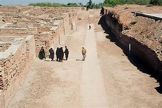
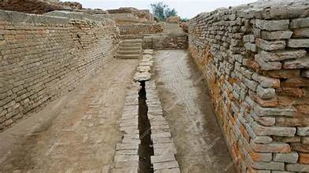

Mohenjo-Daro
The ancient city of the Indus Valley Civilization, a UNESCO World Heritage Site in Sindh, Pakistan.
The ancient city of the Indus Valley Civilization, a UNESCO World Heritage Site in Sindh, Pakistan.
Mohenjo-Daro, meaning "Mound of the Dead," is one of the most important archaeological sites of the Indus Valley Civilization. Located near Larkana in Sindh, Pakistan, it was built around 2500 BCE and is considered one of the world’s earliest major cities.
The city demonstrates advanced urban planning with streets laid out in a grid, well-organized drainage systems, and standardized fired-brick structures. Mohenjo-Daro reflects the remarkable achievements of an ancient civilization that flourished along the Indus River.
Mohenjo-Daro is a model of ancient urban design. Its streets were arranged in a grid pattern, with wide main roads intersecting narrower lanes. Houses were built with baked bricks, often having two stories and private wells.
The most famous structure, the Great Bath, highlights the importance of cleanliness and ritual. The city also featured granaries for food storage, assembly halls, and an advanced drainage system, showcasing remarkable engineering skills for its time.
